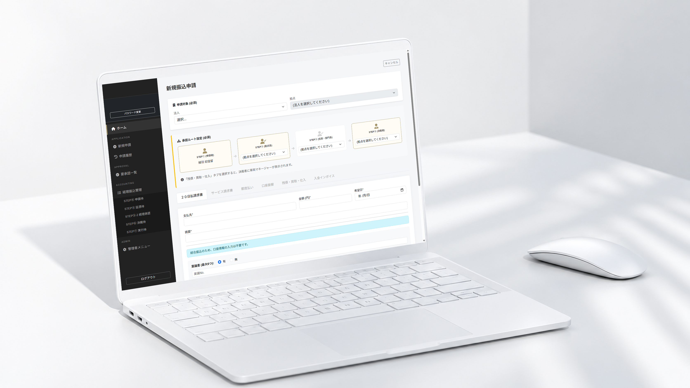

制作概要
Outline
社内ガバナンス強化に伴う「トリプルチェック義務化」に対応するため開発した、全グループ会社共通の振込申請・承認ワークフローシステム。属人化していた連絡手段をシステム上に集約し、ヒューマンエラーの防止と経理業務の大幅な効率化を実現しました。
Target
振込申請を行う全グループ会社の担当者、多段階の承認を行う各部門の決裁者・上長、および最終確認・処理を行う管理本部の経理担当者
Period & Role
UI/UXデザイン：2週間（Figma）
フロントエンド・システム実装：3週間（HTML / CSS / JavaScript / GAS）
担当領域：業務フロー整理 / 画面設計・UIデザイン / フロントエンド
Purpose
メールやLINEなど分散していた申請・承認フローを一本化し、トリプルチェックの確実な履行と、確認漏れ・誤承認の防止、経理部門の管理負荷軽減を実現すること
内容詳細
Detail
「誰が・どこまで承認したか」をひと目で明確に。
誤承認を防ぎ、外出先でも迷わず決裁できるUI設計。
従来はメールやチャットツールを介して個別に行われていた申請・承認を、グループ全社共通のプラットフォームへ統合しました。申請から一次・二次・最終承認までのトリプルチェックの進行状況を可視化し、現在のステータスや差し戻し理由が直感的に判別できるようバッジの色分けとステップ表示を設計しています。
金銭を扱う業務システムであるため、誤操作や誤承認を未然に防ぐUXを重視しました。承認アクションの直前には金額・振込先・添付証憑を再確認できる確認モーダルを設け、重要な項目に自然と視線が誘導される情報の優先度設計を行っています。
また、外出や移動が多い決裁者でも隙間時間にスムーズに承認作業を行えるよう、スマートフォン閲覧時の操作性にこだわったレスポンシブUIを実装。片手でも誤タップが起きにくいボタンサイズと余白設計により、承認リードタイムの短縮と経理担当者の確認工数削減に貢献しました。